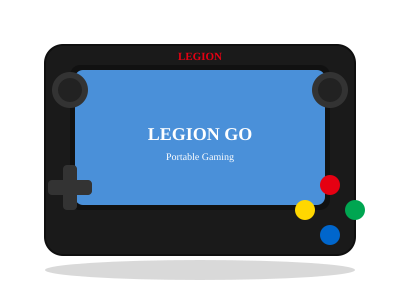

2023 年发布
Lenovo Legion Go
8.8寸大屏PC掌机 · 可拆卸手柄 · Switch式设计
$699
首发价格
8.8寸
超大屏
144Hz
刷新率
854g
重量
📖 历史
2023年11月，联想发布Legion Go——一款8.8寸超大屏的可拆卸手柄PC掌机。Legion Go的设计最接近Nintendo Switch——左右手柄可拆卸、支持FPS模式（右侧手柄像鼠标一样放在桌面使用）、内置支架。8.8寸2.5K 144Hz的屏幕是PC掌机中最大的。
Legion Go搭载了与ROG Ally相同的AMD Ryzen Z1 Extreme APU，性能规格接近。但854g的重量是三款主流PC掌机中最重的（Steam Deck 669g、ROG Ally 608g）。
⚙️ 硬件
APU
Z1 Extreme (8C/16T Zen 4)
GPU
RDNA 3 12CU
内存
16GB LPDDR5X 7500
存储
512GB/1TB NVMe SSD
屏幕
8.8寸 2560×1600 144Hz
手柄
可拆卸+支架+触控板